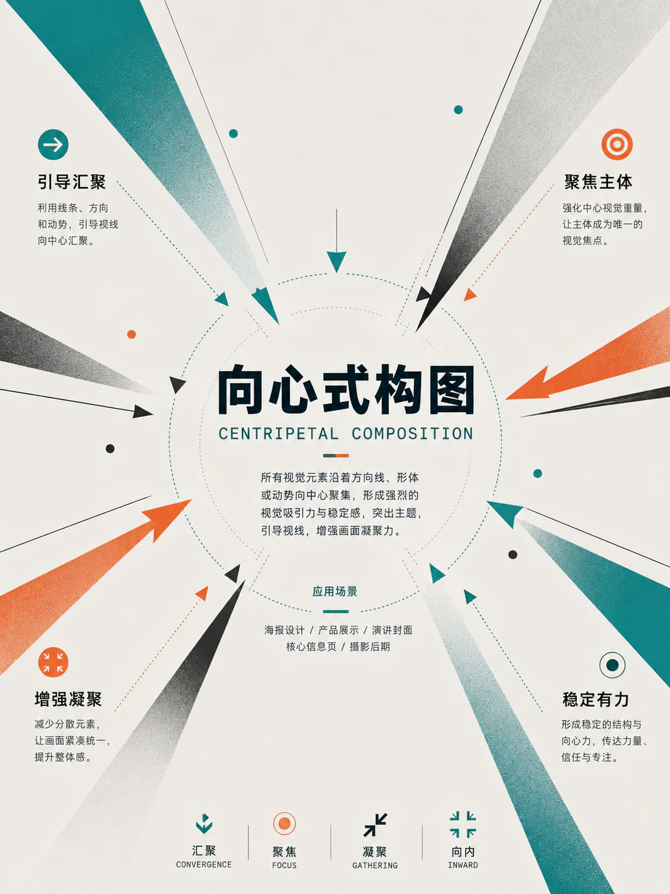

引导汇聚
「利用线条、方向和动势，引导视线向中心汇聚。」
所有外围线条的延长线要真正交于同一焦点区域，哪怕只偏出一两根反向箭头，都会把刚聚拢的目光扯漏。
3 支楔形向外叛逃且指向偏散 24°，视线被扯碎
提示：左右横拖画布拧准偏角，或直接点按红箭扳回向内。
CENTRAL FIXATION BIAS & VECTOR CONVERGENCE
原海报总述 「所有视觉元素沿着方向线、形体或动势向中心聚集，形成强烈的视觉吸引力与稳定感，突出主题，引导视线，增强画面凝聚力。」
向心式构图之所以一上手就管用，是因为它踩中了人类视觉系统的双重顺风车。第一股力量来自眼睛自身的习惯：视觉心理学家本杰明·塔特勒（Benjamin W. Tatler）2007 年在《Journal of Vision》发表的眼动研究指出，面对一幅新画面时，无论图像特征怎么分布，人的第一反应都会优先朝画面中央注视（中心注视偏向，central fixation bias），把中心当作快速读懂全局的最佳观察站。
第二股力量来自外围元素的方向势能：按照格式塔心理学「良好连续律」（Wertheimer, 1923），人眼会自动顺着连续倾斜的线条与收锋形体往下滑；阿恩海姆（Rudolf Arnheim）在《中心的力量》中更指出，当四面八方的视觉向量指向同一核心时，画面会建立起强大的「向心力场」，把原本各自散开的局部压成一个不可分割的整体。
同属放射与环形结构家族，但方向流场各不相同：向外爆发看 052 放射式构图，推离中心甩向边沿看 054 离心式构图，沿圆周层层环绕看 055 同心式构图，旋卷收束看 051 螺旋构图。
FOUR NON-LITERAL CONVERGING CHANNELS
新手一听到「向心式构图」，常常本能地在画面四角画上粗箭头。其实真正高明的平面、摄影与产品视觉，往往藏起箭头本身，借四条隐形通道把视线悄悄送进中央——试着单独开关这四个通道，观察不画一根箭头时引力如何叠加。
PROTECTING THE CENTRAL SANCTUARY
「利用线条、方向和动势，引导视线向中心汇聚。」
所有外围线条的延长线要真正交于同一焦点区域，哪怕只偏出一两根反向箭头，都会把刚聚拢的目光扯漏。
「强化中心视觉重量，让主体成为唯一的视觉焦点。」
导向线必须在主角外侧留出约 22%–36%（经验值）的「静谧环」及时刹住；太紧会刺穿文字，太宽则让主角孤立成空井。
「减少分散元素，让画面紧凑统一，提升整体感。」
向心版面最怕「角落塞满贴片、角标和二维码」。把非必要信息收进底层小字或直接删掉，才能让外围安静托举中心。
「形成稳定的结构与向心力，传达力量、信任与专注。」
多方向的推力在圆心互相抵消，才会产生稳如磐石的锚定感；若所有线条都堆在单侧，画面就会倾斜成单向冲撞。
FROM PUNTO CENTRICO TO GESTALT FORCE FIELDS
WHEN TO CONVERGE & WHEN TO STEP ASIDE
长文需要眼睛顺着水平行从左到右匀速推进。向心线条会把目光一次次拽回版面中心，读两行就觉得发紧疲惫。
替代方案：采用规范多栏网格与明确左对齐基线，把视觉注意力完整交还给行间节奏与段落层次。
当页面需要让用户公平对比 4–6 款并列方案时，向心构图会强行把中央那一款抬成「唯一天选」，让周边选项无人问津。
替代方案：改用均等权重卡片或 056 四象限构图，让每个维度与商品获得对等的比较空间。
海报只需要抓人 3 秒，工作台却要陪人干活 3 小时。四周持续往里聚的强斜线会不断制造紧张感，削弱角落菜单的可达性。
替代方案：保留安静的顶栏与侧栏分区，只在关键空状态或弹窗提示里克制借用一点视觉居中。
SINGLE-VARIABLE DIAGNOSTIC PRACTICE
建筑灯光展「静默光廊 · 2026」准备了四版主视觉海报。四张图的底色、配色、字体与中央主标字号完全相同，仅在向心结构的几何处理上各差一个关键环节。点选你认为真正立得住的那一版：
ORIGINAL POSTER & SIBLING STRUCTURES
